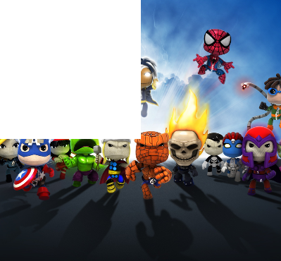

Следующий пример показывает, как скрыть определенную часть картинки. В этом месте картинка становится прозрачной.
import QtQuick 2.5
import QtQuick.Window 2.2
import QtGraphicalEffects 1.0
Window {
visible: true
width: 640
height: 480
title: qsTr("Hello World")
Image
{
id:underlyingImage
source:"qrc:/Jellyfish.jpg"
width: 400
height: 400
fillMode: Image.PreserveAspectCrop
layer.enabled: true
layer.effect: OpacityMask {
maskSource: hiding_rect
}
}
Rectangle
{
id: hiding_rect
width: underlyingImage.width/2
height: underlyingImage.height/2
}
}
Результат:

Сдедует обратить внимание, что для работы эффекта OpacityMask необходимо подключить соответствующую библиотеку import QtGraphicalEffects 1.0.
Так же следует обратить внимание, что эффект OpacityMask в качестве maskSource использует только картинку. Невозможно сделать маску в виде, например Rectangle. Только картинка.
Если же нужно обрезать элемент так, чтобы его изображение не выходило за некие границы, которые заданы с помощью другого элемента, то это можно сделать с помощью ограничивающего прямоугольника со свойством layer.enabled: true:
Rectangle {
id: boundRectangle
width: 100
height: 100
color: "transparent" // Для отладки можно указать любой цвет чтобы увидеть размер
// ограничивающего прямоугольника
// Превращение boundRectangle в отдельный слой,
// за пределами которого рендеринг не идет
layer.enabled: true
Элемент1 {
}
Элемент2 {
}
Элемент3 {
}
}
В этом примере даже если размеры элементов 1...3 будут больше чем boundRectangle то за пределами этого boundRectangle никакой отрисовки происходить не будет.
Есть одна тонкость: видимо, из-за оптимизации графической отрисовки, границы, за которыми отрисовка не происходит, могут быть только прямоугольными. Если прямоугольнику задать свойство radius для скругления углов, то при отрисовке вложенных элементов это скругление углов ограничивающего прямоугольника видно не будет.